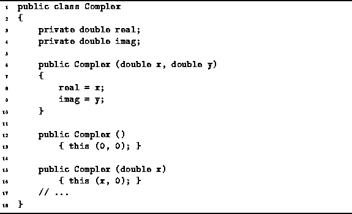

Data Structures and Algorithms
with Object-Oriented Design Patterns in Java
Data Structures and Algorithms
with Object-Oriented Design Patterns in JavaThe constructor which takes no arguments is called the no-arg constructor . For example, the no-arg constructor is invoked when a variable is declared like this:
Complex c = new Complex ();If there are no constructors defined in a Java class, the Java compiler provides a default no-arg constructor . The default no-arg constructor does nothing. The fields simply the retain their initial, default values.

Program: Complex constructors.
Program  gives an implementation for the no-arg constructor.
of the Complex class (lines 12-13).
This constructor simply invokes the method called this.
In Java one constructor can invoke another constructor by calling
the this method as its first executable statement.
In this case, the no-arg constructor invokes the two-arg constructor
to set both real and imag fields to zero.
gives an implementation for the no-arg constructor.
of the Complex class (lines 12-13).
This constructor simply invokes the method called this.
In Java one constructor can invoke another constructor by calling
the this method as its first executable statement.
In this case, the no-arg constructor invokes the two-arg constructor
to set both real and imag fields to zero.
 Copyright © 1998 by Bruno R. Preiss, P.Eng. All rights reserved.
Copyright © 1998 by Bruno R. Preiss, P.Eng. All rights reserved.